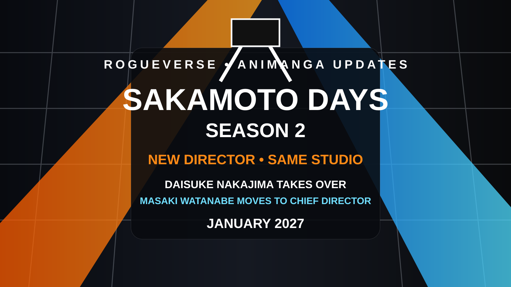

OLD MAN OTAKU / ANIME PRODUCTION • AUGUST 20, 2026
Sakamoto Days Season 2 Has a New Director, and That May Matter More Than the Teaser
Season 2 is headed for January 2027 with a new teaser visual and a reshuffled production hierarchy: Daisuke Nakajima takes the director's chair while Season 1 director Masaki Watanabe moves to chief director.

Sakamoto Days Season 2 has another visual to put on the fridge, but the more interesting development may be sitting behind the camera.
The anime returns in January 2027, with Daisuke Nakajima taking over as director. Season 1 director Masaki Watanabe remains involved as chief director, while TMS Entertainment continues handling animation production.
A different setup for Season 2
This is not a complete creative reset. Moving Watanabe into a chief-director role preserves continuity while giving Nakajima day-to-day directing responsibility. Other core staff members also remain attached, including series composer Taku Kishimoto, character designer Yo Moriyama and composer Yuki Hayashi.
Netflix will again stream the series, and the new material points toward the JCC side of the story becoming increasingly important as Sakamoto's world expands beyond the store and its immediate circle.
Why the director change is worth watching
Sakamoto Days has always needed to balance domestic comedy with action scenes that treat ordinary public spaces like disposable stunt stages. As the source material escalates, the anime's direction becomes increasingly important to pacing, spatial clarity and impact.
That does not mean a new director automatically equals a better or worse season. It means Season 2 has a concrete production change worth evaluating instead of reducing the conversation to another teaser image.
The Old Man Otaku take
The January premiere is the headline. The staff structure is the story underneath it.
Season 2 keeps the same studio and much of the same creative foundation while changing who is steering the daily production. That gives the anime room to evolve without throwing Season 1's identity into the recycling bin.
New director. Familiar production DNA. January 2027 is where we find out what that combination actually changes.
Copyright & ownership notice
Sakamoto Days was created by Yuto Suzuki and is published by Shueisha. The anime, characters, artwork, logos and associated materials belong to their respective creators, production committee, publishers and licensees. RogueVerse Studio claims no ownership of the franchise.